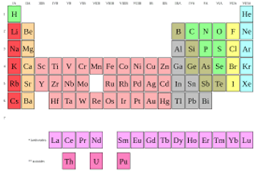

I was not really sure what I wanted to be when I was little. I could not find anything that was really interesting to me. It wasn't until eighth grade that I found out that I was really intersted in science. Learning about the biological and chemical properties of a substance was really interesting. This is why I wanted to be a pharmacist because their job is to know all the biological, physical, and chemical properties of medicines.
 Back to Home Page The Tasks Performed Education Required